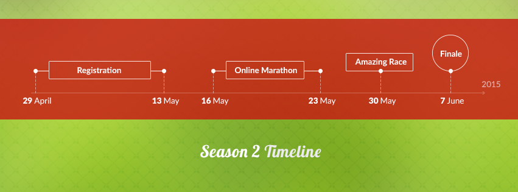
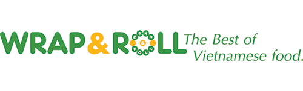

FookUp is the first-of-its-kind cooking contest for Vietnamese community in Singapore. The event aims to provide a playground for Vietnamese to connect and learn more about the homeland cuisine.
No cooking/ingredients preparation is needed. We'll prepare all the needed ingredients/utilities.
FookUp 2014 received active involvement and support from the community and media. We started off the competition with a online marathon round, in which 15 teams (45 people) participated and thereafter selected 8 teams for the finale. The finale was fully packed with close to 100 people attending including finalist teams and audience.
After that huge success, FookUp makes a comeback this year by a partnership between FookUp 2014 Team and Polaris Team. With this new organising team, FookUp 2015 promises to bring to you new exciting experiences.

Registration Period: 8pm Wed 29 April 2015 - 11.59pm Wed 13 May 2015
Online Marathon (2 rounds of mini-test): 10pm - 11.59pm Sat 16 May 2015, and 10pm - 11.59pm Sat 23 May 2015
Amazing Race: 1pm - 5pm Sat 30 May 2015
Finale: 10am - 5pm Sun 7 June 2015
Wrap & Roll Restaurant
One@KentRidge
1 Lower Kent Ridge Road, #01-11
Singapore 119082
FookUp is unique because it focuses on creativity and fun aspect of cooking. All rounds of the competition are built such that the team with fun and creative mindset will win. Participants are not required to have excellent cooking skills.
Each team will need 3 members to register . Registration starts from 8pm Wednesday 29 April 2015 to 11.59pm Wednesday 13 May 2015.
If you can't find team members, we're happy to help you! Register as an individual and we'll help match a team for you.
FookUp 2015 will consist of 3 rounds: Online Marathon, Amazing Race and Finale. 8 teams with highest scores in Online Marathon will compete with each other by playing games in the Amazing Race. The Grand Finale including Semi-Final and Final will be the showcase of Top 6 of the Amazing Race. 3 teams from semi-finalists will be chosen to proceed to the Final.
Game Marathon comprises of 2 elements:
Voting for favorite team: 30%
2 mini-tests: 70%
Voting for Favorite Team is an opportunity for your friends to support you in the competition.
Organising team will upload all registered team photos to FookUp facebook page from 10pm Wednesday 29 April 2015 onwards
Team’s score will be calculated based on number of likes and shares of team’s photo during the period from Wed 29 April 2015 to Wed 13 May 2015
Mini-tests are online challenges competing for speed and accuracy.
2 mini-tests will be released on 10pm Sat 16 May 2015 and 10pm Sat 23 May 2015
For each mini-test, a food-related quiz consisting of 5 questions will be released to each team via FookUp Online Marathon Website
Teams will have 2 hours from the releasing time to work on the quiz and submit the answers via website
The results will be evaluated based on speed and accuracy. Time is considered as the time the organizers receive the answers
Teams are able to make changes to the answers they have already submitted. But beware that every change will be at the teams’ expense of time
Teams will be notified via email that their submission is successful. If teams do not receive such email within 30 minutes after their submission, please promptly notify the organisers.
Late submission after 2 hours from the releasing time will not be considered.
After each mini-test, organizers will announce the score of every team. These rankings will be counted accumulatively and will vary after different sub-rounds, depending on the teams’ performances
Up to 8 teams will be selected to advance to the Amazing Race. The result will be announced on Wednesday 27 May.
Amazing Race will be conducted in the format of Running Man Show on Sat 30 May.
Amazing Race Route will include a number of Vietnamese Restaurants in Singapore. This will be a chance for participants to understand more about exchange food culture between Vietnam and Singapore.
Amazing Race is also an offline challenge for speed and strength:
8 Teams gather at Start Point (TBC) for Briefing at 1pm
Each team will have different running route with same number of restaurants.
At each restaurant, two team will compete with each other by playing a game relating to the restaurant’s specialty.
Winning Team will get 10 points. Losing Team will not get any mark.
After finishing the game, each team will receive clue for your next destination. If you cannot solve the clue, you can ask for hint by exchanging 3 points.
Within 3 hours, every team has to come back the Start Point regardless you finish your route or not
Bonus points for fastest team finishes their route within 3 hours:
1st team: 15 points
2nd team: 10 points
3rd team: 5 points
Bonus points to earn:
Team Cheering during the race: 5 points
Every team will have a lucky star to use for 1 game. If you win, you will receive 20 points. Otherwise, you lose 10 points.
The Semi-final round will take place from 10.00am – 3pm Sunday 7 June 2015 at Wrap&Roll Restaurant - One@Kenridge to select the best 3 teams
Semi-final round consists of 2 fun challenges and a mini cook-off
Winners are decided by the accumulated points of all the activities involved
The mini cook-off is weighted at 50% of the total points
All the ingredients as well as cooking utensils will be provided by organizers to ensure fairness among teams
The top 3 teams will proceed to the Finale in the same afternoon from 2 – 6pm of the same day.
Final round is the competition to showcase cooking skills and creativity of Top 3 with a Vietnamese 3 -course- meal (appetizer, main dish & dessert)

Straight from Ho Chi Minh, Wrap & Roll is a contemporary Vietnamese casual dining restaurant providing an exciting variety of fresh and authentic Vietnamese dishes. It was established in 2006 and has now over 10 outlets and counting in Vietnam & Singapore. Wrap & Roll's popularity is further affirmed with numerous awards like “Best Vietnamese Restaurant Chain 2010” by Vietnam Tourism Board and "Top 10 Authentic and Attractive Vietnamese Food in HCMC".
We are Vietnam2020 - Association of Vietnamese Professionals in Singapore. Here are some of our previous events: